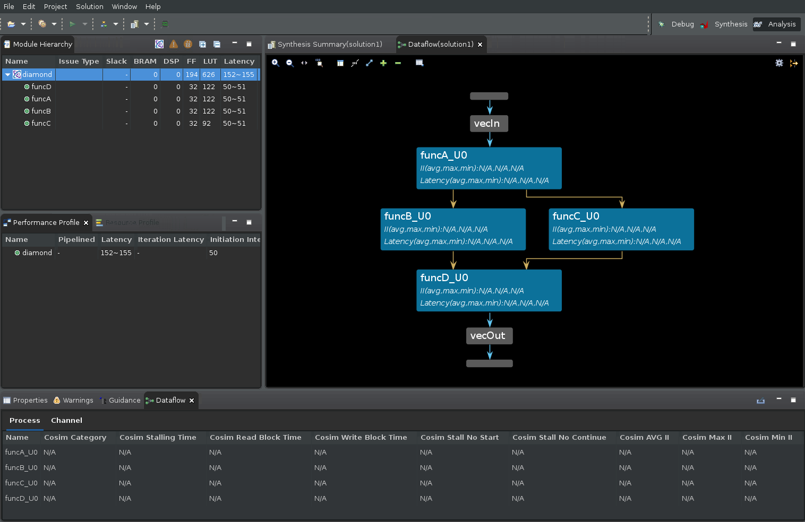
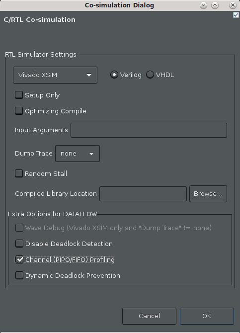
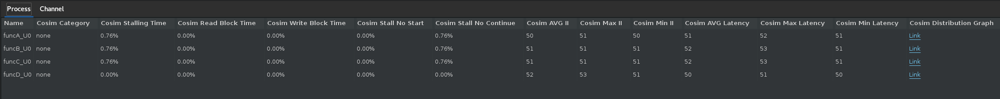
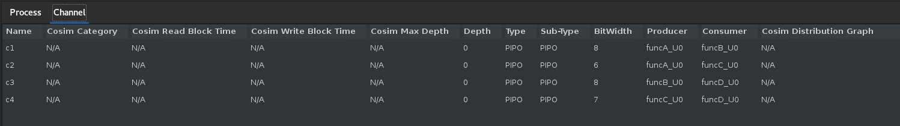
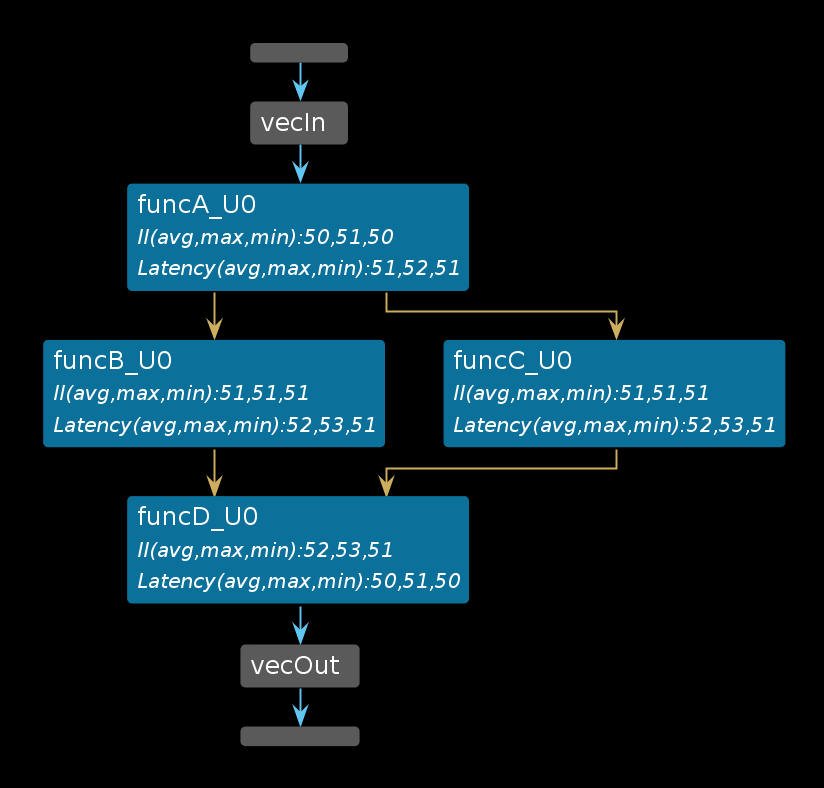
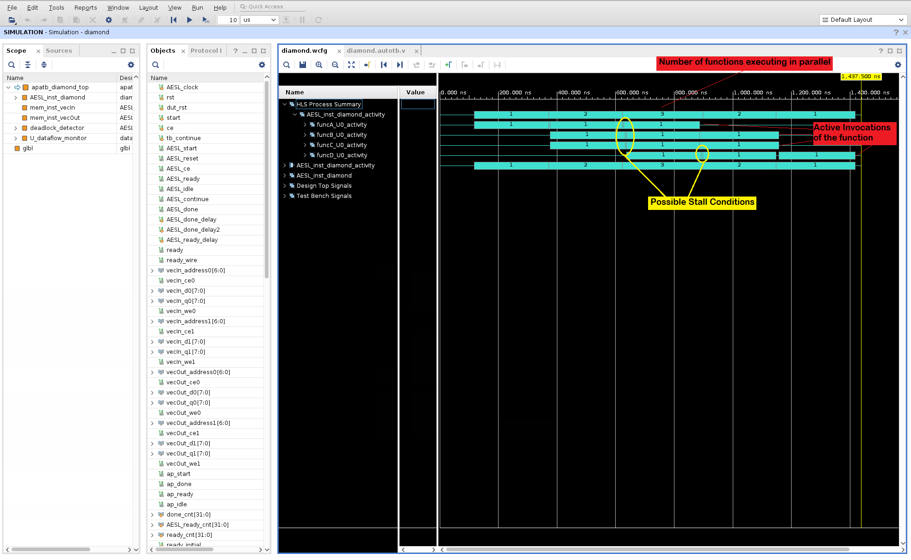
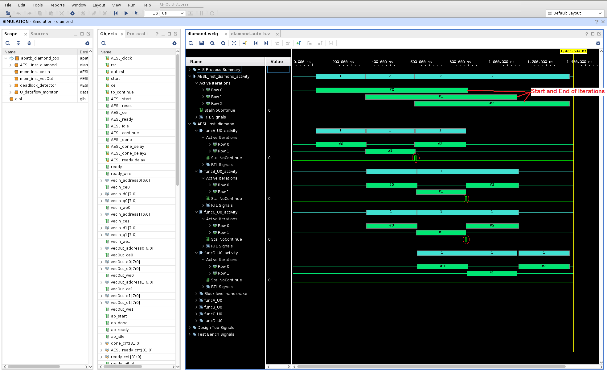

2021.1 Vitis™ アプリケーション アクセラレーション チュートリアル2021.1 Vitis アプリケーション アクセラレーション開発フロー チュートリアルを参照 |
Vitis HLS の解析および最適化 |
1.Dataflow Viewer の基本¶
DATAFLOW 最適化では、ループ レベルの並列処理に加え、コード内のさまざまな関数間にタスク レベルの並列処理が可能な限り作成されます。最適化は 2 部構成になっていて、まず、コンパイラにより並列タスクが推論され、通信チャネルと関連付けられた制御が設定されます。次に、生成した RTL デザインをシミュレーションした後、DATAFLOW 最適化のパフォーマンスが分析されます。このため、ツールで推論されたデータフロー構造を表示する [Dataflow] ビューが提供されていて、チャネル (FIFO/PIPO) を調べ、チャネルの深さがどのようにパフォーマンスに影響しているのかを確認できます。確認をし終えると、パフォーマンス データは、協調シミュレーションの結果から [Dataflow] ビューにバックアノテートされます。また、[Dataflow] ビューには、各プロセスと、その基になるプロデューサーとコンシューマー関係を示すデータフロー構造も表示されます。
ヒント: [Dataflow] ビューにデータフロー構造が表示されるようにするには、デザインに DATAFLOW プラグマまたは指示子を適用する必要があります。データフローは、最上位関数に適用するか、関数の領域またはループを指定して適用します。詳細は、『Vitis 統合ソフトウェア プラットフォームの資料』 (UG1416) の Vitis HLS フローの set_directive_dataflow を参照してください。
概要を学ぶ¶
このチュートリアルではまず、サンプル デザインを合成し、Dataflow Viewer を起動して、ビューアーの機能を確認します。reference-files/dataflow フォルダーにある単純なデータフロー例を見てみます。
この演習では、次のことを学びます。
指定したデータフロー領域を Dataflow Viewer で表示する方法を学びます。
Dataflow Viewer の各機能の使用方法を理解します (協調シミュレーションの前後の両方で)。
第 1 回演習¶
03-dataflow_debug_and_optimization/reference-files/dataflowディレクトリに移動し、次のコマンドを実行して Vitis HLS の GUI を起動します。
vitis_hls -p script.tcl
Vitis HLS GUI が起動して、デザインを合成するために必要なプロジェクトを作成しますが、GUI は script.tcl ファイル内のコマンドを実行する手前で停止します。
緑色の [Run] コマンド (
 ) をクリックして、デザインを合成します。
) をクリックして、デザインを合成します。
デザインを合成したあと、GUI に合成サマリ レポートが自動的に表示されます (次の図を参照)。

合成サマリ レポートにある、関数の横にある Dataflow アイコン ( ) は、Dataflow Viewer レポートが使用可能であることを示しています。
) は、Dataflow Viewer レポートが使用可能であることを示しています。

最上位の関数名 (diamond) を右クリックして、[Open Dataflow Viewer] コマンドを選択すると、次の図のように関数の新しい Dataflow Viewer ウィンドウが表示されます。

前の図には、4 つの領域があります。
[Module Hierarchy] ビュー¶
まず、[Module Hierarchy] ビューですが、これは最上位の diamond 関数の中にある関数階層を表示します。モジュール階層を表示するだけでなく、階層内の各下位関数の詳細 (レイテンシ、II、ロジック リソースの見積もりなど) も確認できます。
[Dataflow Graph] ペイン¶
2 つ目は、データフロー領域内の関数間のコネクティビティをグラフで表示する Dataflow Graph ビューです。データフロー領域のポートは、水平のグレーのバーで表示されています (vecIn と vecOut のポートの詳細は図を参照)。
グラフのノード (青いボックスで表示) は、データフロー領域内の関数やループを表しています。この中には、ユーザーが定義した関数だけでなく、コンパイラが推論した関数も含まれている可能性がある点に注意してください。これらの推論された関数には、通常、接尾辞 _proc が含まれています。
グラフのエッジ (青、緑、金の矢印で表示) は、関数間のやりとりを表しています。
青いエッジは関数間のデータ依存関係を表しています。
緑のエッジは関数間の推論された FIFO チャネルを表しています。
金色のエッジは推論される PIPO チャネルを表しています。
Dataflow Graph ビューには、ツールバー メニューに Zoom In/Out コマンド (マウスのスクロール ボタンでもズームイン/アウト可能)、Zoom Fit、Zoom Full コマンドなど、便利な機能がいくつかあります。また、FIFO チャネルは、Group All および Ungroup All コマンドを使用して、PIPO チャネルと同様にグラフ上でグループ化または非グループ化して表示できます。個々のチャネル グループは、+ または - コマンドで拡張またはグループ化できます。最後に、グラフで使われている色の構文を表示する Legend コマンドがあります。
グラフ ペインの右上にある Filter アイコンを使って、ストリーム/タスク レベル/スカラーの伝搬 FIFO、PIPO、ブロックのストリームなど、さまざまなチャネルのサブタイプをフィルターにかけることができます。
[Dataflow Properties] 表¶
GUI の下部には、データフロー プロセス (または関数) とデータフロー チャネルに関する詳細を表示する [Dataflow Properties] という表があります。
[Dataflow Graph] ビューで各プロセス/関数をクリックすると、対応するプロセスが [Dataflow Properties] でハイライトされます。
選択したプロセスを右クリックすると、このプロセスに関する情報と、ほかにどのビューアーにアクセスできるのかが確認できます。
[Dataflow Properties] で [Channel] という表に切り替えます。グラフ内の緑/金の矢印をクリックすると、対応するチャネルが [Channel] でハイライトされます。
データフローの最適化は、スタティックな最適化であるパイプライン処理とは異なり、ダイナミックである点を理解することが重要です。このため、コンパイラからデータフロー最適化のインプリメンテーションが通知されますが、RTL 協調シミュレーションを実行し終えるまでは、最適化の効果を確認することはできません。RTL 協調シミュレーションでパフォーマンス データが生成されるまでは、次の図のようにプロセスまたはチャネルの詳細に「N/A」と表示されます。
![[Channel] ビュー](../../../../_images/dataflow_channel.png)
ヒント: RTL 協調シミュレーションを実行する前に Dataflow Viewer を開くことはできますが、読み出し/書き込みがブロックされている時間、協調シミュレーションの深さ、ストール時間などの重要なシミュレーション パフォーマンスの詳細はビューアーには表示できません。
RTL 協調シミュレーション後の [Dataflow Graph] の表示¶
合成後は、協調シミュレーションを実行する必要があります。詳細は、『Vitis 統合ソフトウェア プラットフォームの資料』 (UG1416) の Vitis HLS フローの Vitis HLS での C/RTL 協調シミュレーションを参照してください。
メニューから [Solution] → [Run C/RTL Co-Simulation] をクリックします。 次の図のように [Co-simulation] ダイアログ ボックスが開きます。

[Channel (PIPO/FIFO) Profiling] をオンにします。
[OK] をクリックします。
協調シミュレーションが終了すると、協調シミュレーション レポートが開き、シミュレーション テストベンチが問題なく実行されたかどうかがレポートされます。
データフロー解析では、テストベンチが合成済み関数を複数回呼び出して、複数のイテレーションからパフォーマンス データを取得し、FIFO をフラッシュします。パフォーマンスに関しては、1 つの関数呼び出しでレイテンシ、その関数への 2 つ以上の呼び出しで II (開始間隔) が計算されます。
協調シミュレーションが終了したら、画面の右上で [Analysis] を選択し、
Analysisパースペクティブに切り替えます。[Dataflow Graph] ビューを開いている場合、次の図のように、RTL 協調シミュレーションで生成されたパフォーマンス データでレポートが更新 (またはバックアノテーション) されます。
ヒント: 開いていない場合は、[Module Hierarchy] ビューで最上位の
diamond関数を右クリックし、[Open Dataflow Viewer] を選択します。![[Open Dataflow Viewer]](../../../../_images/dataflow_graph.png)
C/RTL 協調シミュレーションを実行すると、グラフのパフォーマンス データが書き込まれ、グラフの下の [Process] および [Channel] の表にもデータが挿入されます (次の図)。RTL 協調シミュレーションからのパフォーマンス データがない場合、グラフおよび表には値が存在しないことを示す「NA」と表示されます。詳細は、『Vitis 統合ソフトウェア プラットフォームの資料』 (UG1416) の Vitis HLS フローの Dataflow Viewer を参照してください。

上の図の [Dataflow Process] 表に注目してください。
Cosim Stalling Time列は、このプロセスで、シミュレーションにかかった時間の何パーセントがストールしたかを示します。また、Cosim Read Block TimeまたはCosim Write Block Timeは、プロセスのチャネルの読み出しまたは書き込みがブロックされている時間の割合を示します。Cosim Stall No StartCosim Stall No Continueは、フォーワード プレッシャーおよびバック プレッシャーをそれぞれ示します。フォワード プレッシャーは、ブロック ハンドシェイク プロトコルによって別の実行反復が開始できなくなっていることを意味します。
バック プレッシャーは、コンシューマー プロセスが生成したデータがまだ処理中で、次のデータセットを処理する準備ができていないことを意味します。
これらは、データフロー領域内の潜在的な問題を指摘する重要な指標で、パフォーマンスの低下や、場合によってはデッドロックの原因となる、典型的なプロデューサーとコンシューマーの比率の問題を示します。

同様に、[Channel] 表 (上の図) でも、各チャンネルのリード ブロックとライトがブロックされている時間を追跡します (
Cosim Read Block TimeとCosim Write Block Timeで示されます)。[Channel] 表には、チャネル別に、深さ (Depth)、チャネルのタイプ (Type)、シミュレーション実行中に達成される深さの最大値 (Cosim Max Depth) も表示されます。通常、これらのデータ フィールドは、FIFO チャネルに有用です。次のセクションでは、これらのフィールドを使用して、FIFO の深さを正確に決め、FIFO のサイズを間違えたことが原因で起きるデッドロックの解決方法をさらに詳しく説明します。さらに、[Process] および [Channel] 表の
Cosim Category列を使用して、複数のプロセスやチャネルを、「none」、「read_block」、「write_block」、「read_block and write_block」の 4 つのわかりやすいカテゴリのいずれかにまとめることができます。
波形を使用したデータフロー パフォーマンスの確認¶
Dataflow Viewer は、データフロー最適化をスタティックに表示しているだけです。このグラフでは、データフロー領域の構造のような呼び出しが図で示されています (次を参照)。パス上の各関数の II および Latency を確認すると、デザインのスループットがおおよそ掴めるはずです。

データフロー領域内のこれらの関数がどのように並列で実行され、また、関数の実行がどのようにオーバーラップしているのかを確認するのは簡単ではありません。このダイナミックなタイムラインをビジュアル化するには、Vivado XSIM および波形ビューアーを使用します。
シミュレータの波形ビューアーを起動するには、次の新しい設定を使用して、RTL 協調シミュレーションを再実行する必要があります。
メニューから [Solution] → [Run C/RTL Co-Simulation] をクリックします。
次の図のように [Co-simulation] ダイアログ ボックスが開きます。

次を選択します。
Vivado XSIM シミュレータが選択されていることを確認します。
[Dump Trace] で [all] を選択し、すべてのポートと信号を追跡します。注記: ここで使用しているのは小型デザインなので、すべての信号をトレースできます。ただし、大型デザインですべてをトレースするとなると、シミュレーションの実行時間と、大きな波形データベースの作成に時間がかかる可能性があります。
[Wave Debug] をオンにして、シミュレーション中に XSIM 波形ビューアーをインタラクティブに起動します。
[Channel (PIPO/FIFO) Profiling] をオンにします。
[OK] をクリックします。
この時点から、Vitis HLS GUI から RTL 協調シミュレーションが起動できるようになります。今回違うのは、シミュレーションが終了したときに、Vivado XSIM 波形ビューアーが表示され (Wave Debug オプションがオンになっているので)、(Dump Trace オプションの設定により) シミュレーション中に生成された波形を確認できる点です。次のような図が表示されます。

データフロー最適化が、データフロー領域内の関数を並列でどのように実行するのかを簡単に説明するため、プロセスの始点と終点を追跡するよう波形が解析され、このアクティビティのサマリが波形ビューアーに表示されます。上の図では次の点に注意してください。
デザインの最上位の関数は
diamond関数です。波形ビューアーでは、これはAESL_inst_diamondとして表示されます。Name列の最初の項目は、HLS Process Summaryである点に注意してください。このセクションは、diamond関数内のデータフロー領域のアクティビティ トレース (青緑色のバー) 示しています。これは実際には、AESL_inst_diamond_activity項目の下にあるアクティビティ トレースの複製です。HLS Process Summaryは、波形ビューアーの 1 セクションに、関数アクティビティの波形を一緒にまとめているだけです。最初の行は、diamond 関数のアクティブな反復実行の数をまとめたもので、これらは指定された時点 (1、2、3、2、1) で並列に実行されています。関数の個々のアクティブ実行 (
funcA, funcB, funcC, & funcD) を確認するには、このレベルを展開させます。このテスト用に提供されているテストベンチでは、最上位関数のdiamondが 3 回呼び出されます。各関数のアクティビティ トレースは、この 3 つの呼び出しのそれぞれがいつ実行されるかを示します。また、表示されているのは、diamond関数の本文の中で関数が実行される順序です。まず、funcAが始まり、funcBとfuncC並列実行が続いて、これらの関数が終了すると、funcDの実行が開始します。黄色い点線で表されている、実行と実行の間のわずかなギャップは、実行が停止しているので、よく調べてみるべき場所です。このビューには、データフロー領域内の関数がパイプライン処理で実行される状態が表示されます。ただし、スタティック パイプラインではなく、ダイナミック パイプラインで実行されます。

AESL_inst_diamond_activityレベルを展開して、さらに詳細のビューを開き、最上位の関数の 3 つの呼び出し (#0、#1、#2) がどのように実行されるかを確認します。これらは緑色のバーで表示されます。このテストベンチでは、反復実行は 0 から始まり、2 で終わります。各反復が完了するのにかかる時間を比較し、反復の時間がどのようにオーバーラップするかも確認できます。最上位関数の複数の呼び出しもダイナミックにパイプライン処理されます。下位関数のそれぞれのアクティビティ トレースを調べ、下位関数の始点と終点がどのタイミングで起きているのかを確認します (緑色の #0、#1、#2 のバーで表示され、青緑の (1、1、1) バーは、ある時点のアクティブな反復実行を表示しているだけです)。
関数実行のストールを引き起こしかねないバック プレッシャーがあれば、それをすべてハイライトするために、
StallNoContinue信号などの追加詳細が表示されます。上の図では、funcDからのバック プレッシャーはfuncBおよびfuncCに対して見られる可能性があります (さまざまなStallNoContinue波形で赤い省略記号で表示されます)。RTL Signalsセクションを展開すると、RTL レベルの信号も確認できます。この HLS データフローでは (PIPO チャネルのみ場合など)、カーネル実行で連続して通信するタスクはオーバーラップしません。
funcBおよびfuncCは、funcA(ping または pong) からのバッファーが解放されてからでないと開始しません。funcBおよびfuncCは、FIFO が ping-pong バッファーへの代替えチャネルとして使用されている場合、データが生成される順番で消費されると、さらに早い段階で開始する可能性があります。通常、データがランダムな順番でバッファーに書き込まれる場合は、PIPO が使用されるので、バッファーへのアクセスが解放される前に、すべてのプロセッシングが完了するまで、バッファー全体がロックされます。データが作成された順番で消費されるストリーミング タイプのアプリケーションがある場合は、普通、FIFO が使用されます。こうすると、FIFO にデータがはいるとすぐに、コンシューマーがプロセッシングを開始するようになります。
次の手順¶
FIFO のサイズ調整およびデッドロック: GUI のデッドロック検出機能の使用方法と、デッドロックを回避して、より良いパフォーマンスを得るための FIFO のサイズ調整方法を確認します。
Copyright© 2020 Xilinx